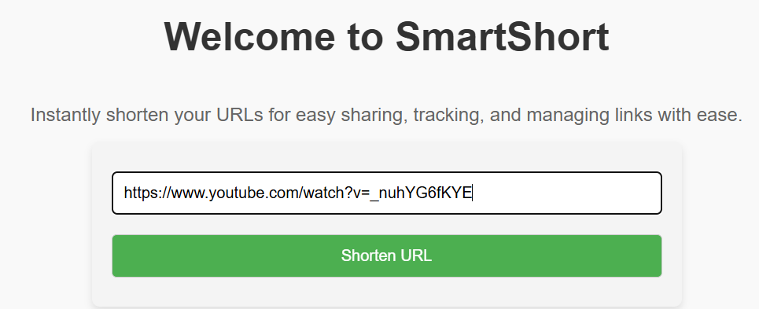
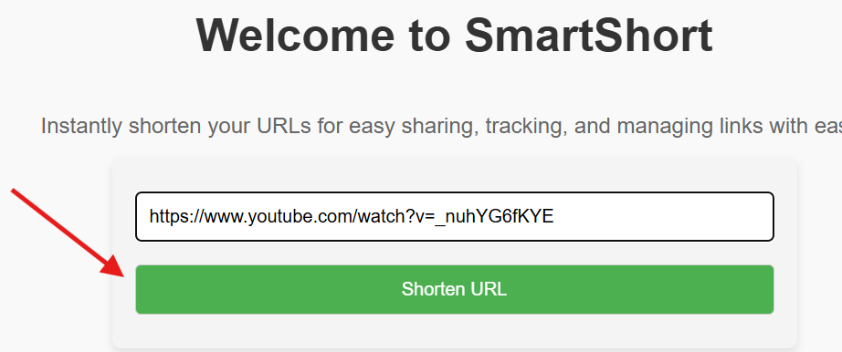
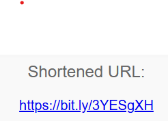

Welcome to Short And Sweet
Instantly shorten your URLs for easy sharing, tracking, and managing links with ease.
How Short And Sweet Works
Short And Sweet makes URL shortening simple, fast, and effective. Here’s how it works:
- Enter the URL: Paste the long URL you want to shorten into the input field.
- Click 'Shorten URL': Hit the button and within seconds, your link is shortened.
- Copy and Share: Once the URL is shortened, simply copy it and share it with your audience.
That's it! It's as simple as 1-2-3! Short And Sweet will take care of everything else, from shortening the URL to tracking its performance.
More Ways to Use Short And Sweet
Besides basic URL shortening, Short And Sweet provides several other helpful features:
- Custom Short Links: Create personalized short URLs that reflect your brand or message.
- Link Tracking: Gain valuable insights into how your shortened links are performing across different platforms.
- Analytics Dashboard: Access real-time analytics and reports, including click data, geographic locations, and device usage.
- Link Management: Organize and manage your shortened URLs in one place for better control and access.
- QR Code Generation: Generate QR codes for your shortened links to make them easy to scan and share offline.
Our Simple 3-Step Process
Step 1: Paste Your URL
Start by pasting your long URL into the input box. Whether it's a website link, social media post, or document, Short And Sweet will handle it.
Step 2: Shorten Your Link
Click the "Shorten URL" button, and our system will instantly generate a shorter, more manageable URL for you.
Step 3: Share and Track
Copy the shortened URL and share it via email, social media, or any other platform. Monitor its performance through our analytics dashboard.
How People Are Using Short And Sweet
Short And Sweet is used by professionals, marketers, bloggers, and businesses worldwide for a variety of reasons. Here are some common use cases:
- Social Media Managers: Shorten and track links for social media posts, ensuring your content reaches the right audience.
- Digital Marketers: Gain insights into how campaigns are performing with detailed analytics.
- Content Creators: Use short, memorable links in videos and blogs to improve user engagement.
- Business Teams: Manage and track important links internally for effective collaboration.
- Event Planners: Share event details with attendees using short and easy-to-remember URLs.
Advanced Features for Power Users
If you need more from your URL shortening service, Short And Sweet offers premium features to enhance your link management:
- Link Analytics API: Integrate Short And Sweet's analytics with your own applications to track links programmatically.
- Custom Domains: Use your own branded short domains to maintain a professional image.
- Link Expiration: Set expiry dates for your short links, making them temporary for limited-time campaigns.
- Bulk URL Shortening: Shorten multiple URLs at once by uploading a CSV file or through our API.
Privacy and Security
Your privacy and security are our top priorities. Short And Sweet ensures that your data is always safe and protected:
- Data Encryption: All data sent through our platform is encrypted using the latest security standards.
- No Tracking of Personal Data: We do not collect any personal information, ensuring your privacy is protected.
- Secure Links: Shortened links are secured with HTTPS to protect against tampering and interception.
Ready to Simplify Your Links?
Join thousands of users who trust Short And Sweet for fast and reliable URL shortening. Start today and enjoy streamlined link sharing with enhanced control!
Get Started Now